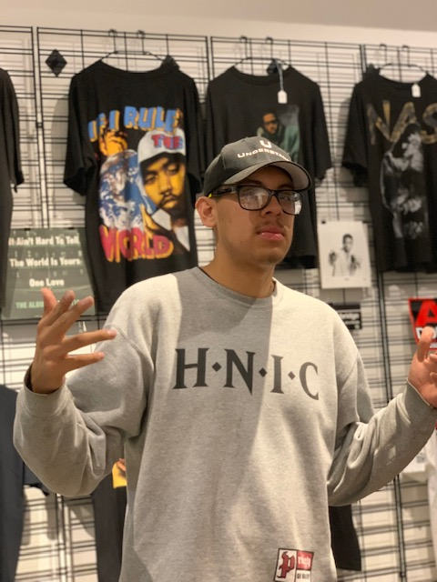
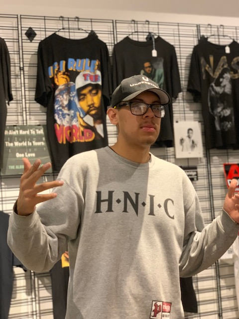

About Me

 

I started collecting when I was " " years old. I remember being " " listening to " " and feeling " ". I'm passionate about collecting " " and sharing " " my " " with those who also share my interest in " ". If i'm being honest, it can be difficult for me to part with some of my stuff, you feel me? I have some stuff that has true sentimental value to me and may never be able to part with due to the connection I hold with some of the items. Due to the feelings I have for some of my items, I know that there are people out there searching for specific items to add to their collections that will bring them joy; That is why I opened Chico's Closet LA. I hope that one day I will be able to " " in order to " ".